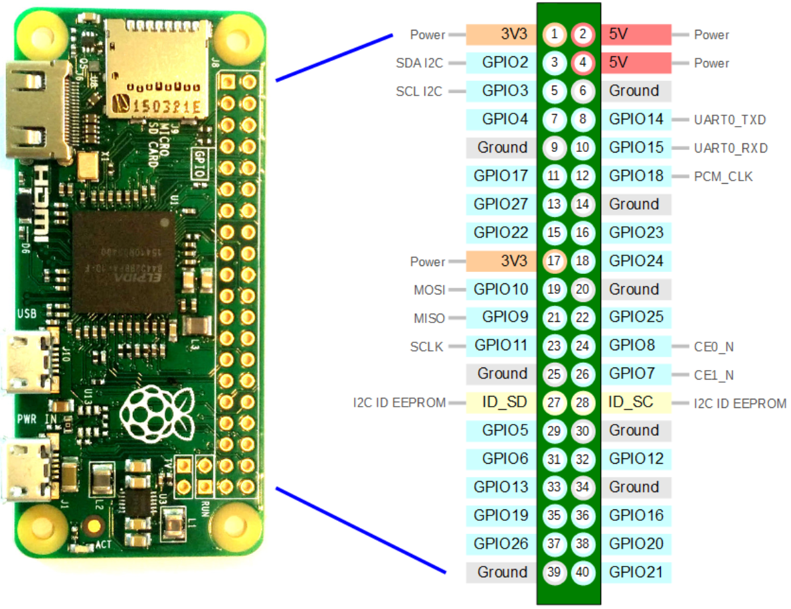

BytesOfProgress
Wiki
Raspberry Pi Zero W
The Raspberry Pi Zero W is ideal for small, cost-effective projects, offering wireless connectivity and versatility in a tiny form factor. It is perfect for Internet of Things (IoT) applications, DIY electronics projects, and educational purposes. Its compact size and low power consumption make it suitable for portable and battery-powered projects. The built-in Wi-Fi and Bluetooth capabilities enable easy networking and communication with other devices. Additionally, the extensive GPIO pins and compatibility with various Raspberry Pi HATs and accessories provide a flexible platform for experimenting and prototyping.
General Information
Processor: 1 GHz single-core ARM11
RAM: 512MB LPDDR2
Networking: 802.11 b/g/n Wi-Fi, Bluetooth 4.1 (BLE)
Ports: Mini HDMI, Micro USB OTG, Micro USB for power, CSI camera connector
Storage: MicroSD slot
GPIO: HAT-compatible 40-pin header (unpopulated)
Video: Composite video via test points
Camera: CSI camera connector (requires adapter cable)
Power: 5V/1.2A via Micro USB
Size: 65mm x 30mm x 5mm
Weight: 9 grams
PinOut

back